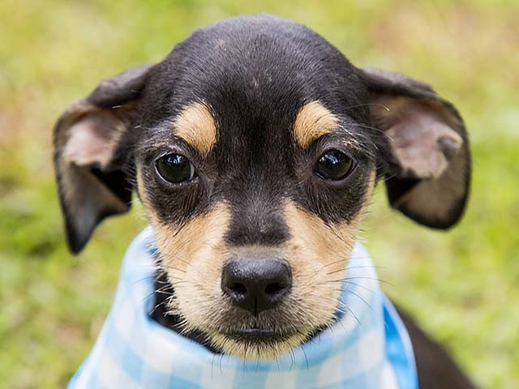
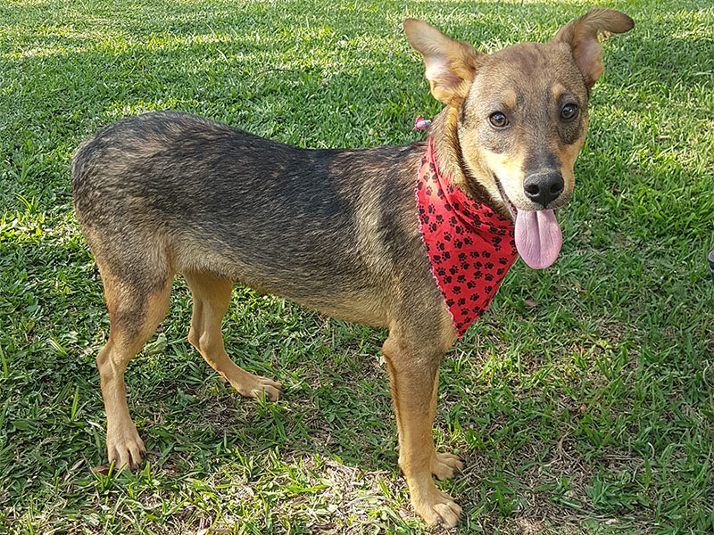

Nome(Animal): SNOOPY
Raça: SRD
Informaçao: Foi recolhido com sua mãe e irmãozinhos. Eram tão novos que ainda não tinham nem aberto os olhinhos.

Nome(Animal): LILO
Raça: SRD
Informaçao: Foi abandonado com os irmãos numa caixa no portão da ONG.

Nome(Animal): MEL
Raça: Mestiço
Mestiça de border collie. Foi adotada com o Apolo e devolvida um ano depois. A adotante alegou que os vizinhos estavam reclamando dos latidos. Como acostumou com seu irmãozinho Apolo deverão ser doados juntos.